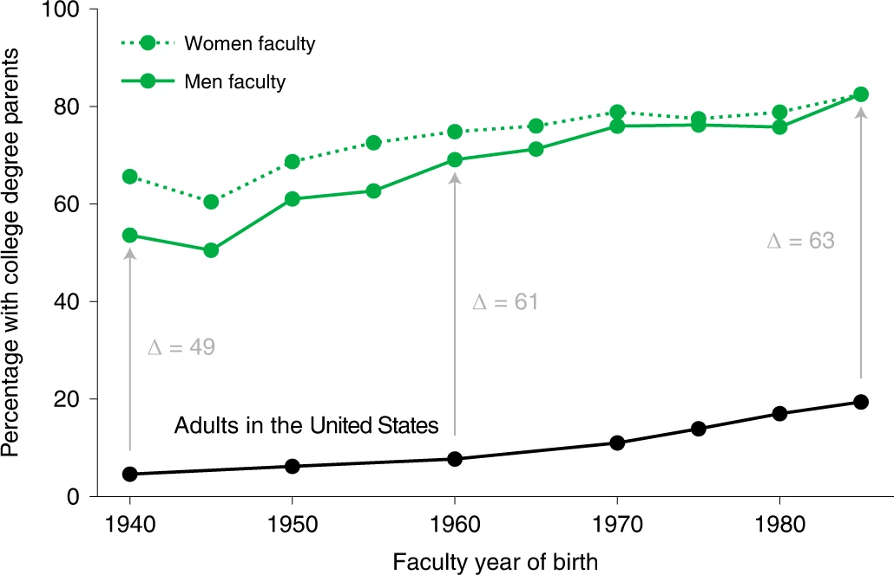
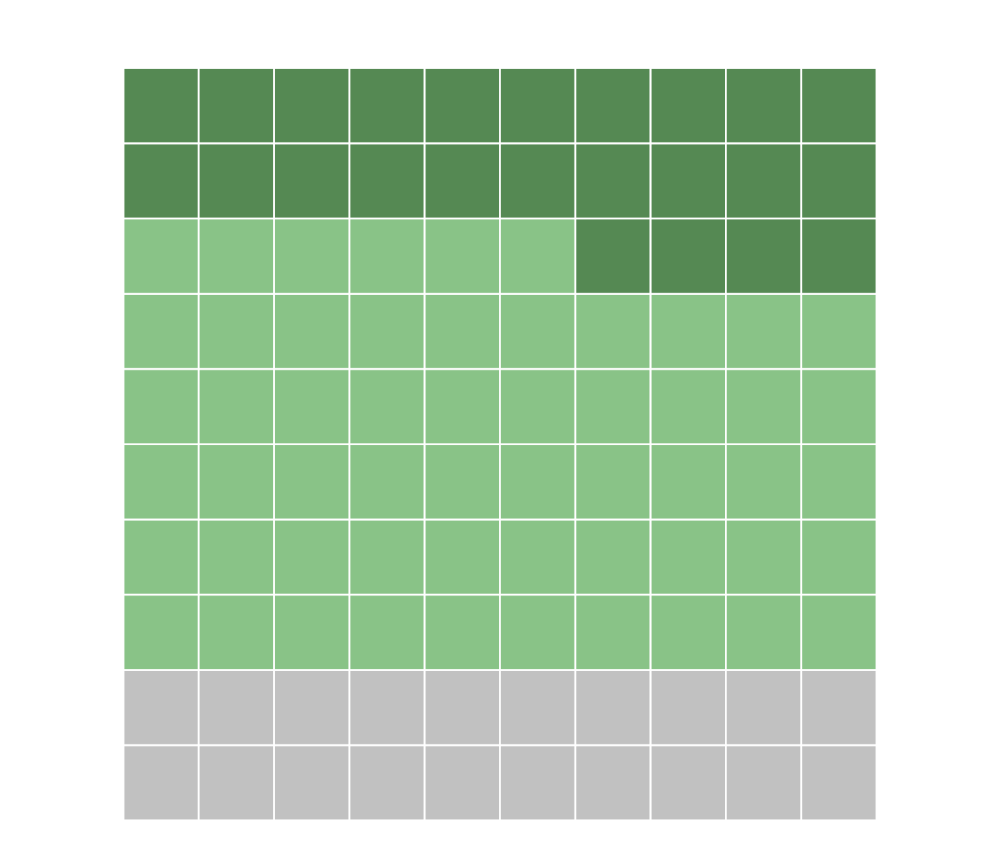

Beyond Research
The Problem
Most researchers come from wealthy backgrounds. Most of the people they study don't. This imbalance distorts scholarship.
While the lab primarily focuses on research, it also engages in some advocacy efforts. To this point, those efforts have focused on addressing socioeconomic inequities in higher education, particularly in the professoriate. Most of the people that researchers study are (relatively) poor, but study after study shows that most researchers come from (relatively) wealthy backgrounds. This imbalance leads to poorer conceptual, theoretical, and empirical work and we actively promote efforts to address it.
As part of these efforts, Charles Crabtree, the PI of the lab, worked closely with the American Political Science Association to change how it measured first-generation status in their 2023 annual survey. Data from this new measure, which now aligns with United States government guidelines and measures used by other comparable academic associations, provides the best evidence for socioeconomic representation and inequities in the discipline.

The Data
The largest diversity shortfall in the field: a 56–66 percentage-point gap.
If political science faculty mirrored the socioeconomic makeup of the United States, we would expect that about 80% of faculty would be the first in their family to complete a four-year degree. If political science faculty mirrored the socioeconomic makeup of the world, we would expect that about 90% of faculty would be the first in their family to complete a four-year degree. According to APSA data, only about 24% of faculty are first-generation graduates. This representation gap, a delta of 56 or 66 percentage points depending on the point of comparison, represents the largest diversity shortfall in the field.

The lack of an adequate and representative number of firstgen faculty leads to many issues, including the persistent class gap that we observe in academic career outcomes, the lack of discussion about class in higher education, and the inadequate representation of poorer folks in the scientific literature.